vignettes/poisson/Reanalysis_Aghaeepour2017_Poisson.Rmd
Reanalysis_Aghaeepour2017_Poisson.RmdReanalysis of mass cytometry data from Aghaeepour et al. (2017) using the Poisson Log-Normal Mixed Model.
Parse input parameters.
ncells = Inf
seed = 0xdada
ncores = 8
zenodo_url = "https://zenodo.org/record/2652578/files/"
cytof_data = "se_aghaeepour2017immune.Rdata"
prefit = paste0("cytoeffect_plmm_ncells_",ncells,".Rdata")
prefit## [1] "cytoeffect_plmm_ncells_Inf.Rdata"Install packages.
pkgs_needed = c("devtools","tidyverse","magrittr","SummarizedExperiment",
"ggthemes","cowplot","RColorBrewer","broom","hexbin",
"intergraph","igraph","ggnetwork","ggcorrplot","MASS",
"parallel","dplyr")
letsinstall = setdiff(pkgs_needed, installed.packages())
if (length(letsinstall) > 0) {
BiocManager::install(letsinstall)
}
devtools::install_github("ChristofSeiler/cytoeffect")Load packages.
library("cytoeffect")
library("tidyverse")
library("magrittr")
library("SummarizedExperiment")
library("ggthemes")
library("cowplot")
library("RColorBrewer")
library("broom")
library("intergraph")
library("igraph")
library("ggnetwork")
library("ggcorrplot")
library("MASS")
library("parallel")
library("dplyr")
theme_set(theme_few())Download preprocessed data from Zenodo.
rdata_filenames = c(cytof_data, prefit)
for(filename in rdata_filenames)
download.file(url = paste0(zenodo_url, filename),
destfile = filename,
mode = "wb")Load SummarizedExperiment object from CytoGLMM workflow.
load(cytof_data)
exprs = assay(se_aghaeepour2017immune)
sample_info = rowData(se_aghaeepour2017immune)
sample_info_names = names(sample_info)
df_samples = cbind(as.data.frame(exprs), as.data.frame(sample_info))
df_samples %<>% as.tibble
protein_names = colData(se_aghaeepour2017immune) %>%
as.data.frame %>%
dplyr::filter(type == "function") %>%
.$protein_name
gate_protein_names = colData(se_aghaeepour2017immune) %>%
as.data.frame %>%
dplyr::filter(type == "phenotype") %>%
.$protein_nameTally cell count.
## # A tibble: 379 x 4
## # Groups: term, celltype [24]
## term celltype donor n
## <fct> <chr> <chr> <int>
## 1 1st trimester intMC PTLG001 1
## 2 3rd trimester gdT PTLG018 1
## 3 3rd trimester gdT PTLG019 1
## 4 3rd trimester gdT PTLG020 1
## 5 3rd trimester intMC PTLG009 1
## 6 3rd trimester ncMC PTLG018 1
## 7 3rd trimester intMC PTLG018 3
## 8 3rd trimester ncMC PTLG009 3
## 9 1st trimester gdT PTLG020 4
## 10 3rd trimester intMC PTLG004 5
## # ... with 369 more rows## # A tibble: 379 x 4
## # Groups: term, celltype [24]
## term celltype donor n
## <fct> <chr> <chr> <int>
## 1 1st trimester CD4+Tmem PTLG009 35076
## 2 3rd trimester CD4+Tmem PTLG007 34303
## 3 1st trimester CD4+Tmem PTLG003 30796
## 4 3rd trimester CD4+Tmem PTLG009 29886
## 5 1st trimester CD4+Tmem PTLG007 28958
## 6 1st trimester CD4+Tnaive PTLG022 27953
## 7 1st trimester CD4+Tmem PTLG024 27592
## 8 3rd trimester CD4+Tnaive PTLG005 27318
## 9 3rd trimester CD4+Tnaive PTLG022 25901
## 10 3rd trimester CD4+Tnaive PTLG001 24423
## # ... with 369 more rowsSubset to NK cells.
df_samples_subset = df_samples %>% dplyr::filter(celltype == "NK")
df_samples_subset %<>% dplyr::select(protein_names,gate_protein_names,sample_info_names)Subsample cells to a maximum number of cells per donor.
if(nrow(df_samples_subset) > ncells) {
print(paste("subsampled to",ncells,"per donor"))
set.seed(seed)
# subsample depending on max cell count
df_count = df_samples_subset %>% group_by(donor) %>% tally() %>%
mutate(nnew = ifelse(n > ncells,ncells,n))
# create table with a data frame in one column
df_nested = df_samples_subset %>% group_by(donor) %>% nest() %>%
left_join(df_count,by = "donor")
# subsample per donor
df_samples_subset = df_nested %>%
mutate(samp = map2(data, nnew, sample_n)) %>%
dplyr::select(donor, samp) %>%
unnest()
} else {
print("no subsampling done")
}## [1] "no subsampling done"Tally cell count.
## # A tibble: 32 x 4
## # Groups: term, celltype [2]
## term celltype donor n
## <fct> <chr> <chr> <int>
## 1 3rd trimester NK PTLG024 2380
## 2 3rd trimester NK PTLG001 3125
## 3 3rd trimester NK PTLG020 3230
## 4 1st trimester NK PTLG020 3412
## 5 1st trimester NK PTLG001 3474
## 6 3rd trimester NK PTLG009 3764
## 7 1st trimester NK PTLG018 4083
## 8 1st trimester NK PTLG024 4100
## 9 1st trimester NK PTLG010 4273
## 10 3rd trimester NK PTLG019 4542
## # ... with 22 more rows## # A tibble: 32 x 4
## # Groups: term, celltype [2]
## term celltype donor n
## <fct> <chr> <chr> <int>
## 1 1st trimester NK PTLG008 13395
## 2 1st trimester NK PTLG022 8222
## 3 1st trimester NK PTLG003 8087
## 4 3rd trimester NK PTLG008 7953
## 5 3rd trimester NK PTLG018 7620
## 6 1st trimester NK PTLG029 7211
## 7 1st trimester NK PTLG019 6671
## 8 1st trimester NK PTLG012 6624
## 9 3rd trimester NK PTLG004 6501
## 10 3rd trimester NK PTLG002 6120
## # ... with 22 more rowsPostprocessing of posterior samples. Traceplot of posterior samples.
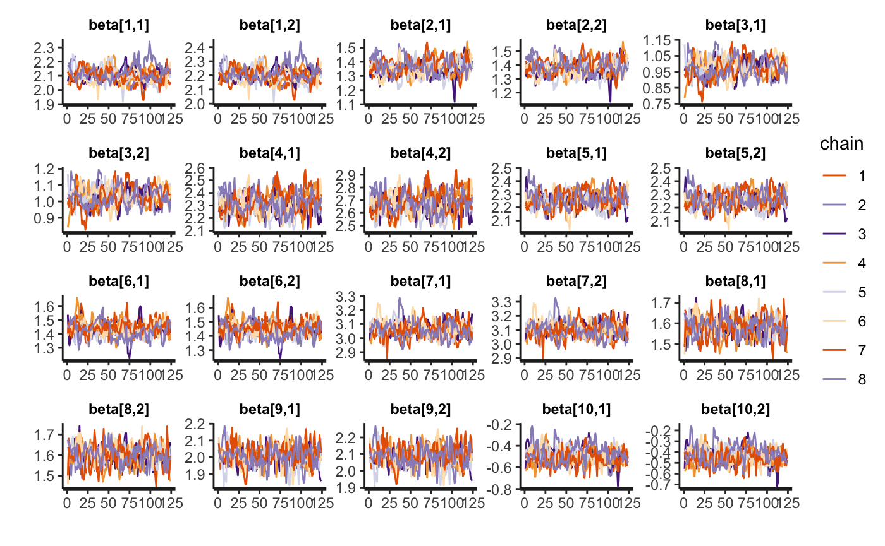
Some more MCMC diagnostics. According to empirically findings, Rhat > 1.1 is usually indicative of problems in the fit.
pars = c("beta",
"sigma","sigma_term","sigma_donor",
"Cor","Cor_term","Cor_donor",
"b_donor")
tb = summary(obj$fit_mcmc,
pars = pars)$summary %>%
as.tibble(rownames = "pars", .before = 1) %>%
dplyr::select(pars, n_eff, Rhat)
tb %<>% na.omit() # Stan fills upper triangle with zeros
tb %>% arrange(n_eff)## # A tibble: 507 x 3
## pars n_eff Rhat
## <chr> <dbl> <dbl>
## 1 b_donor[15,1] 112. 1.09
## 2 beta[1,1] 112. 1.09
## 3 b_donor[7,1] 112. 1.09
## 4 beta[1,2] 113. 1.09
## 5 b_donor[5,1] 113. 1.09
## 6 b_donor[13,1] 113. 1.09
## 7 b_donor[2,1] 113. 1.09
## 8 b_donor[3,1] 113. 1.09
## 9 b_donor[11,1] 113. 1.09
## 10 b_donor[6,1] 113. 1.09
## # ... with 497 more rows## # A tibble: 507 x 3
## pars n_eff Rhat
## <chr> <dbl> <dbl>
## 1 b_donor[11,1] 113. 1.09
## 2 b_donor[15,1] 112. 1.09
## 3 b_donor[5,1] 113. 1.09
## 4 beta[1,1] 112. 1.09
## 5 b_donor[9,1] 114. 1.09
## 6 b_donor[6,1] 113. 1.09
## 7 beta[1,2] 113. 1.09
## 8 b_donor[3,1] 113. 1.09
## 9 b_donor[7,1] 112. 1.09
## 10 b_donor[16,1] 114. 1.09
## # ... with 497 more rows## # A tibble: 1 x 2
## min max
## <dbl> <dbl>
## 1 112. 1053.## # A tibble: 1 x 2
## min max
## <dbl> <dbl>
## 1 0.992 1.09Plot posterior regression coefficients.
p1 = plot(obj, type = "beta") +
ggtitle(expression("Fixed Effects"~beta)) +
theme(legend.position = "bottom") +
guides(col = guide_legend(ncol = 1)) +
scale_color_few()
p1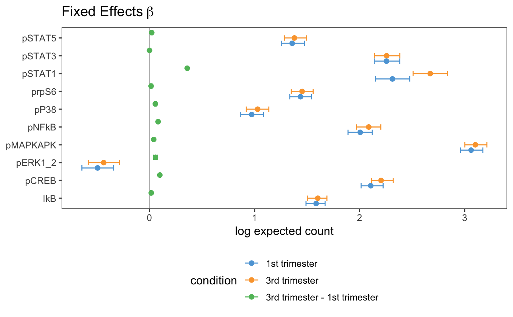
plot(obj, type = "beta") +
facet_wrap(~condition, scales = "free_x") +
theme(legend.position = "bottom") +
guides(col = guide_legend(ncol = 1)) +
scale_color_few()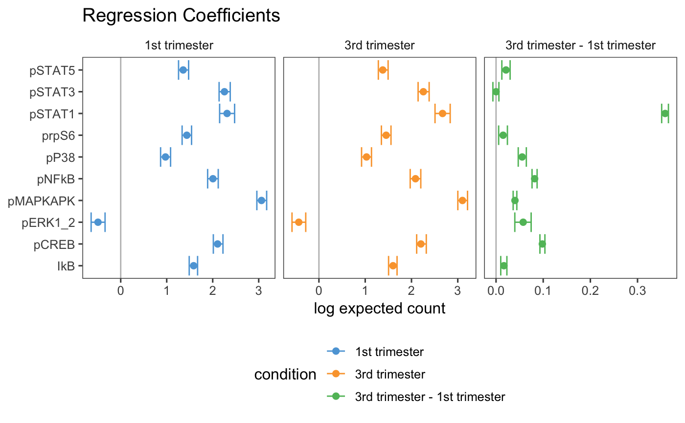
Extract expected count difference for pSTAT1.
post_beta = rstan::extract(obj$fit_mcmc, pars = "beta")[[1]]
first_index = which(levels(pull(obj$df_samples_subset, obj$condition))
== "1st trimester")
third_index = which(levels(pull(obj$df_samples_subset, obj$condition))
== "3rd trimester")
pstat1_index = which(obj$protein_names == "pSTAT1")
first_log_count = quantile(post_beta[,pstat1_index,first_index],
probs = c(0.025, 0.5, 0.975))
first_log_count## 2.5% 50% 97.5%
## 2.150289 2.311943 2.475899## 2.5% 50% 97.5%
## 8.587339 10.094014 11.892397third_log_count = quantile(post_beta[,pstat1_index,third_index],
probs = c(0.025, 0.5, 0.975))
third_log_count## 2.5% 50% 97.5%
## 2.508325 2.671118 2.835957## 2.5% 50% 97.5%
## 12.28434 14.45613 17.04671diff_log_count = quantile(
post_beta[,pstat1_index,third_index] - post_beta[,pstat1_index,first_index],
probs = c(0.025, 0.5, 0.975))
diff_log_count## 2.5% 50% 97.5%
## 0.3512085 0.3586297 0.3655275## 2.5% 50% 97.5%
## 1.420784 1.431367 1.441274Posterior multivariate pairs plot.
pSTAT1_index = which(obj$protein_names == "pSTAT1")
pSTAT3_index = which(obj$protein_names == "pSTAT3")
pSTAT5_index = which(obj$protein_names == "pSTAT5")
post_beta = rstan::extract(obj$fit_mcmc, pars = "beta")[[1]]
tb_log_count = bind_rows(
tibble(
term = levels(pull(obj$df_samples_subset, obj$condition))[1],
pSTAT1 = post_beta[,pSTAT1_index,1],
pSTAT3 = post_beta[,pSTAT3_index,1],
pSTAT5 = post_beta[,pSTAT5_index,1]
),
tibble(
term = levels(pull(obj$df_samples_subset, obj$condition))[2],
pSTAT1 = post_beta[,pSTAT1_index,2],
pSTAT3 = post_beta[,pSTAT3_index,2],
pSTAT5 = post_beta[,pSTAT5_index,2]
)
)
plot_diag = function(marker) {
ggplot(tb_log_count, aes_string(marker, fill = "term")) +
geom_histogram(bins = 40, position = "identity", alpha = 0.5) +
scale_fill_few()
}
plot_off_diag = function(marker1, marker2) {
ggplot(tb_log_count, aes_string(marker1, marker2, color = "term")) +
geom_density2d() +
scale_color_few()
}
ppair = plot_grid(
plot_diag("pSTAT1") + theme(legend.position = "none"),
NULL,
NULL,
plot_off_diag("pSTAT1","pSTAT3") + theme(legend.position = "none"),
plot_diag("pSTAT3") + theme(legend.position = "none"),
NULL,
plot_off_diag("pSTAT1","pSTAT5") + theme(legend.position = "none"),
plot_off_diag("pSTAT3","pSTAT5") + theme(legend.position = "none"),
plot_diag("pSTAT5") + theme(legend.position = "none"),
ncol = 3
)
plot_grid(ppair,
get_legend(plot_diag("pSTAT1") + theme(legend.position = "bottom")),
ncol = 1,
rel_heights = c(1, .1))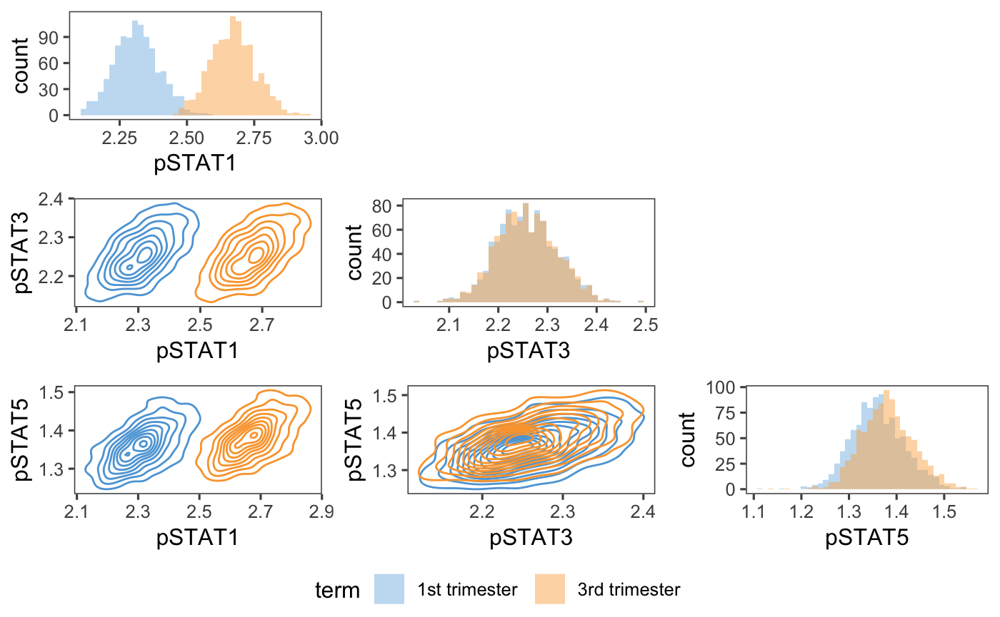
Plot posterior standard deviation.
p2 = plot(obj, type = "sigma") +
ggtitle("Marker Standard Deviation"~sigma) +
theme(legend.position = "bottom") +
guides(col = guide_legend(ncol = 1)) +
scale_color_manual(values=c("#5DA5DA", "#FAA43A", "#F17CB0"))
p2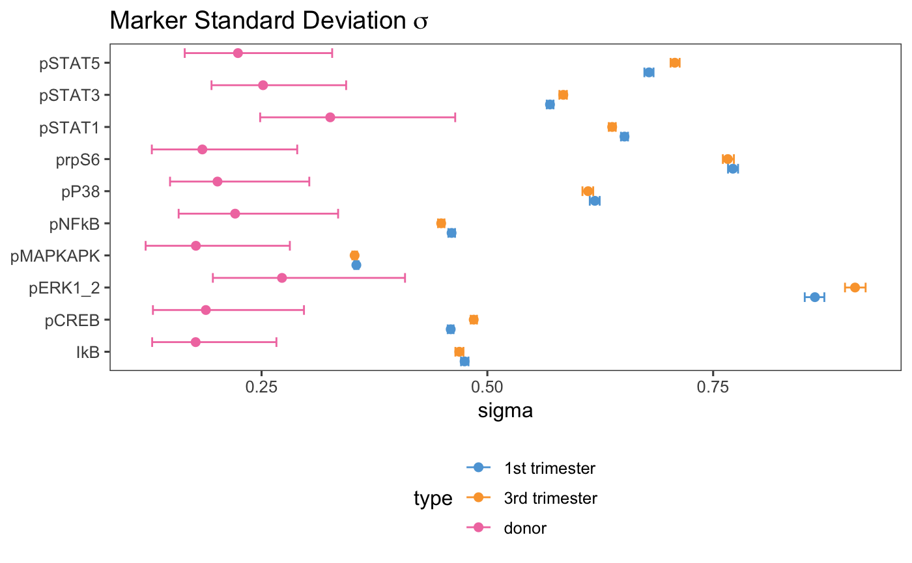
Plot posterior correlations.
## [[1]]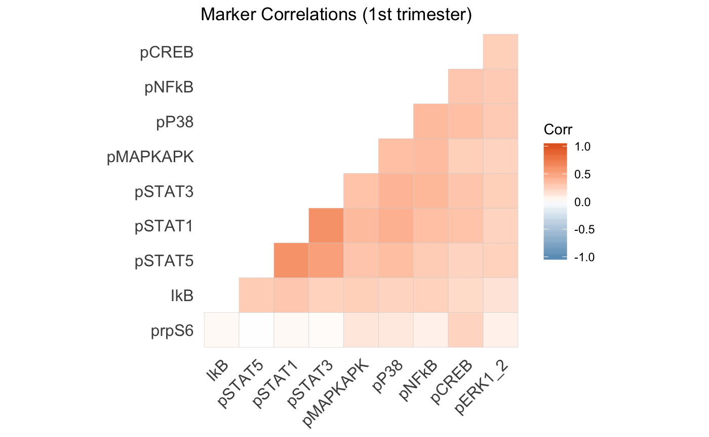
##
## [[2]]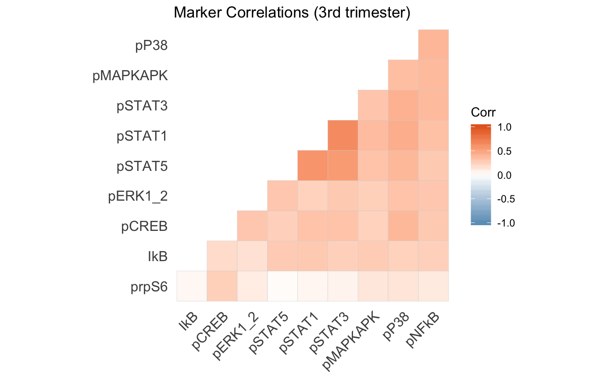
##
## [[3]]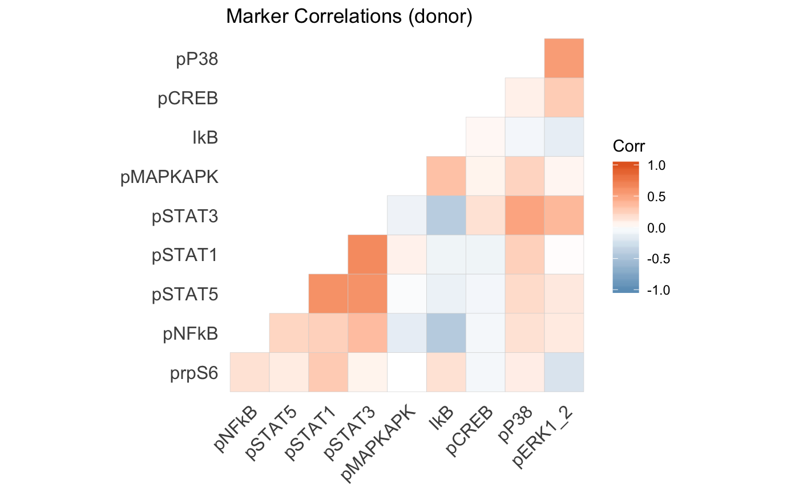
Multivariate posterior MDS plots.
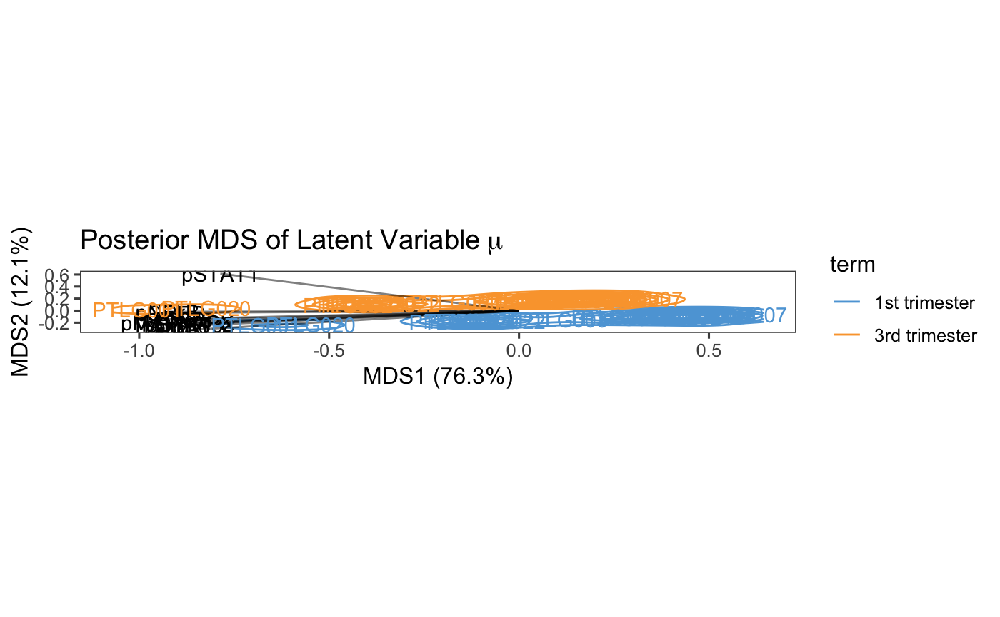
ggsave(filename = "posterior_mds_latent_variable_mu_scaled.pdf", width = 10, height = 5)
cytoeffect::plot_mds(obj, asp = FALSE)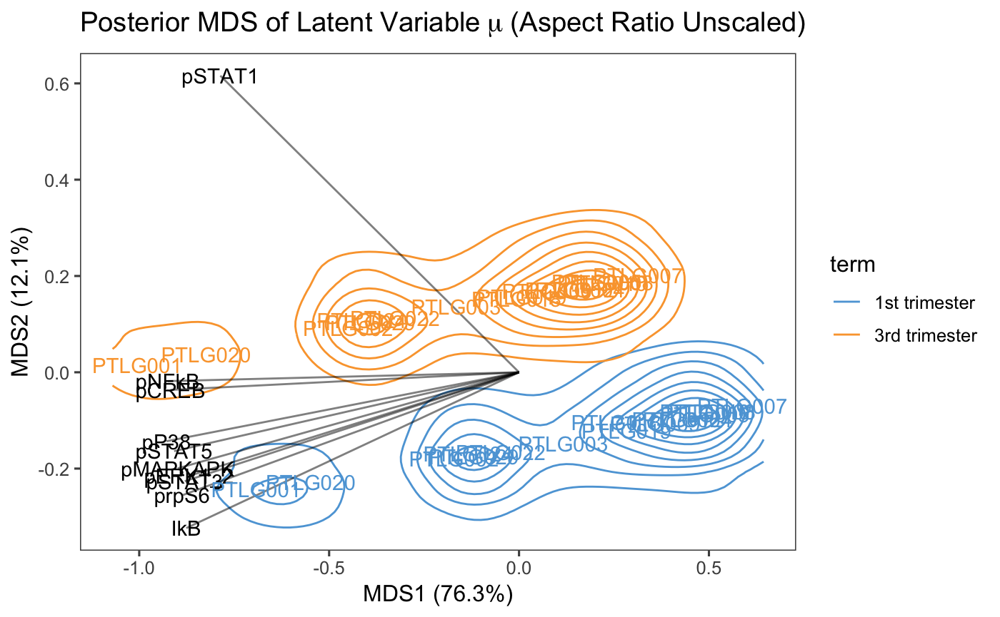
Pairwise correlation change between conditions.
marker_pair = c("pSTAT3","pSTAT5")
Cor = rstan::extract(obj$fit_mcmc, pars = "Cor")[[1]]
Cor_term = rstan::extract(obj$fit_mcmc, pars = "Cor_term")[[1]]
Cor_diff = Cor_term - Cor
tb_cor = Cor_diff[,
which(obj$protein_names == marker_pair[1]),
which(obj$protein_names == marker_pair[2])] %>% as.tibble
tb_cor %<>% mutate(
side = if_else(tb_cor$value > 0,
true = paste0("positive (", 100*mean(tb_cor$value > 0), "%)"),
false = paste0("negative (", 100*mean(tb_cor$value <= 0), "%)"))
)
# keep colors consistent
if(mean(tb_cor$value > 0) == 1) {
fill_colors = "#E46726"
} else {
fill_colors = c("#6D9EC1","#E46726")
}
ggplot(tb_cor, aes(value, fill = side)) +
geom_histogram(bins = 50, alpha = 0.7) +
xlab(paste0("Cor_term(", paste(marker_pair, collapse = ", "),")" )) +
ggtitle("Posterior Distribution") +
scale_fill_manual(values = fill_colors)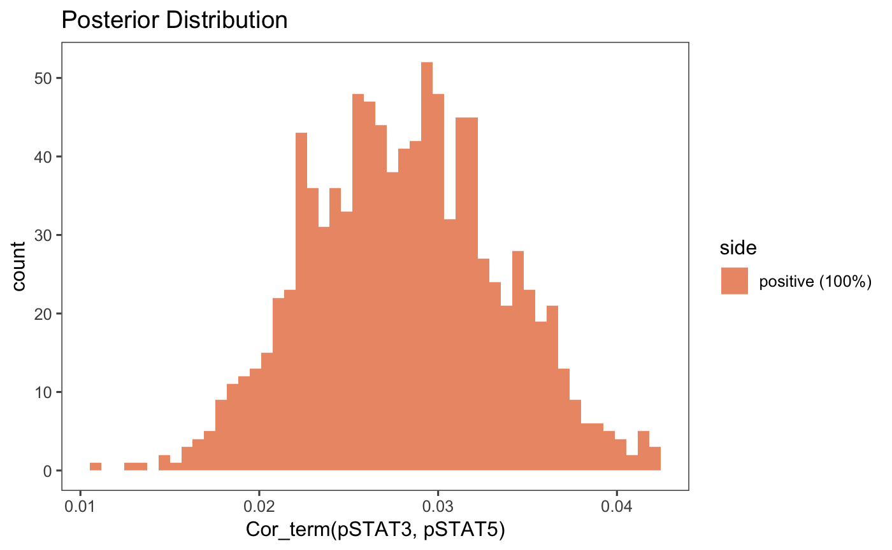
Check if overall correlation structure changes between conditions.
value = sapply(1:nrow(Cor_diff), function(i) {
mask = which(upper.tri(Cor_diff[i,,]), arr.ind = T)
cord = Cor_diff[i,,]
mean(cord[lower.tri(cord)] > 0)
})
tb_cor = tibble(value = value)
tb_cor %<>% mutate(
side = if_else(tb_cor$value > 0.5,
true = paste0("> 1/2 (", 100*mean(tb_cor$value > 0.5), "%)"),
false = paste0("<= 1/2 (", 100*mean(tb_cor$value <= 0.5), "%)"))
)
p_global = ggplot(tb_cor, aes(value, fill = side)) +
geom_histogram(bins = 25, alpha = 0.7) +
ggtitle(expression("Overall P(Corr"~Omega~"(3rd) > Corr"~Omega~"(1st))")) +
scale_fill_manual(values = fill_colors) +
theme(legend.position = "bottom") +
xlab("probability")
p_global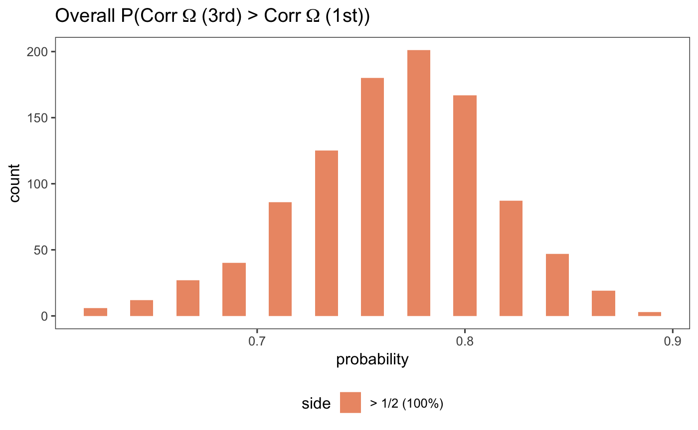
Plot differential correlations.
cor_increase = apply(X = Cor_diff, MARGIN = c(2,3), FUN = function(x) mean(x > 0))
colnames(cor_increase) = rownames(cor_increase) = obj$protein_names
p_local = ggcorrplot(cor_increase, hc.order = TRUE, type = "lower",
outline.col = "lightgray",
colors = c("#6D9EC1", "white", "#E46726")) +
ggtitle(expression("P(Corr"~Omega~"(3rd) > Corr"~Omega~"(1st))")) +
theme(panel.grid.major = element_blank(),
panel.grid.minor = element_blank()) +
scale_fill_gradient2(limit = c(0, 1), midpoint = 0.5,
low = "#6D9EC1", mid = "white", high = "#E46726",
name = "probability")
p_local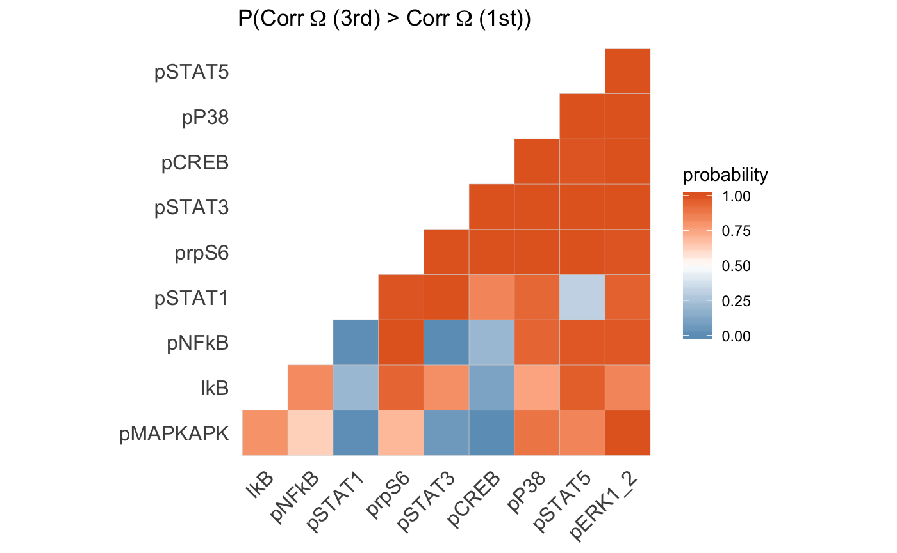
Plot graph with edges at least 95% probability of larger correlation.
plot_correlation_graph = function(lambda) {
graph = apply(Cor_diff, c(2,3), function(x) mean(x>0))
diag(graph) = 0
graph[upper.tri(graph)] = 0
ind = which(graph > 0, arr.ind = T)
tb_graph = tibble(
from = obj$protein_names[ind[,1]],
to = obj$protein_names[ind[,2]],
prob = graph[ind]
)
tb_graph %<>% dplyr::filter(prob > lambda)
tb_graph
bayesFDR = sum(1-tb_graph$prob)/nrow(tb_graph)*100
bayesFDR
set.seed(0xdada)
ig = graph_from_data_frame(tb_graph, directed = FALSE)
ggplot(ggnetwork(ig, layout = "circle"), aes(x, y, xend = xend, yend = yend)) +
geom_edges(color = "black", size = 1) +
geom_nodes(color = "black", size = 20) +
geom_nodetext(aes(label = vertex.names),
color = "white", size = 3, fontface = "bold") +
xlim(c(-0.1, 1.1)) +
ylim(c(-0.1, 1.1)) +
ggtitle(paste0("Posterior Expected FDR: ",
round(bayesFDR, digits = 1),"%")) +
theme_blank() +
theme(plot.title = element_text(hjust = 0.5))
}
plot_correlation_graph(lambda = 0.8)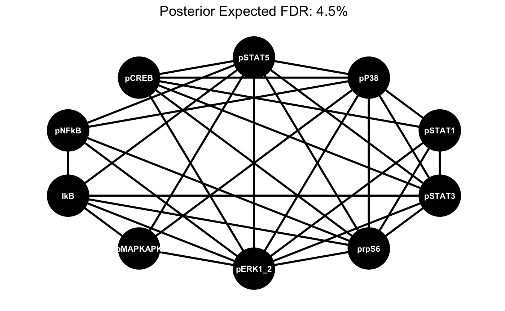
Combine plot for paper.
pall = plot_grid(
p1, p2,
plist[[1]] + ggtitle(expression("Marker Corr"~Omega~"(1st trimester)")),
plist[[2]] + ggtitle(expression("Marker Corr"~Omega~"(3rd trimester)")),
p_global, p_local,
rel_heights = c(0.38,0.31,0.31),
nrow = 3, labels = "AUTO"
)
ggsave(plot = pall,
filename = "posterior_summary_plmm.pdf",
width = 8, height = 11)Define a test statistics and compare observed value with posterior predictive distribution.
Predictive distribution marginalized over cell random effects.
stan_pars = rstan::extract(obj$fit_mcmc,
pars = c("beta",
"sigma","sigma_term","sigma_donor",
"Cor","Cor_term","Cor_donor"))
condition = "term"
term = obj$df_samples_subset %>%
pull(condition) %>%
as.factor() %>%
as.integer()
conditions_levels = levels(pull(obj$df_samples_subset,
obj$condition))
# kth posterior draw
sample_y_hat = function(k = 1) {
set.seed(seed)
lapply(1:2, function(cond) {
n_cells_cond = table(term)[cond]
beta = stan_pars$beta[k,,]
mu = rep(0, length(protein_names))
beta_rep = sapply(beta[,cond], rep, n_cells_cond)
if(cond == 1) {
sigma = stan_pars$sigma[k,]
Cor = stan_pars$Cor[k,,]
} else {
sigma = stan_pars$sigma_term[k,]
Cor = stan_pars$Cor_term[k,,]
}
Cov = diag(sigma) %*% Cor %*% diag(sigma)
b = mvrnorm(n = n_cells_cond, mu, Cov)
sigma_donor = stan_pars$sigma_donor[k,]
Cor_donor = stan_pars$Cor_donor[k,,]
Cov_donor = diag(sigma_donor) %*% Cor_donor %*% diag(sigma_donor)
b_donor = mvrnorm(n = n_cells_cond, mu, Cov_donor)
count = exp(beta_rep + b + b_donor)
count = matrix(rpois(length(count), count),
nrow = nrow(count),
ncol = ncol(count))
count %<>% as.tibble
names(count) = protein_names
count %<>% add_column(term = conditions_levels[cond])
count
}) %>% bind_rows()
}
Y_hat = sample_y_hat(k = 1)
Y_hat %>%
group_by(term) %>%
summarize_at(protein_names, median)## # A tibble: 2 x 11
## term pCREB pSTAT5 pP38 pSTAT1 pSTAT3 prpS6 pMAPKAPK IkB pNFkB pERK1_2
## <ch> <int> <int> <int> <int> <int> <int> <int> <int> <int> <int>
## 1 1st… 8 4 3 10 10 4 22 5 8 1
## 2 3rd… 9 4 3 15 10 4 23 5 8 1## # A tibble: 2 x 11
## term pCREB pSTAT5 pP38 pSTAT1 pSTAT3 prpS6 pMAPKAPK IkB pNFkB pERK1_2
## <fc> <dbl> <dbl> <dbl> <dbl> <dbl> <dbl> <dbl> <dbl> <dbl> <dbl>
## 1 1st… 8 4 3 10 9 4 22 5 7 0
## 2 3rd… 9 4 3 14 9 5 22 5 8 0Check if we can model pSTAT, pSTAT3, and pSTAT5 bright cells.
gof = function(df, test_stat) {
tfm = function(x) asinh(x/5)
df_tfm = df %>% mutate_at(protein_names, tfm)
df_median = df_tfm %>% summarize_at(protein_names, median)
tibble(
term = c(
"1st trimester",
"3rd trimester"
),
statistic = c(
test_stat(df_tfm %>% filter(term == "1st trimester"), df_median),
test_stat(df_tfm %>% filter(term == "3rd trimester"), df_median)
)
)
}
test_stat_a = function(df_tfm, df_median) {
mean(df_tfm$pSTAT1 > df_median$pSTAT1 &
df_tfm$pSTAT3 > df_median$pSTAT3 &
df_tfm$pSTAT5 > df_median$pSTAT5) * 100
}
gof_obsv_a = gof(df_samples_subset, test_stat_a)
gof_pred_a = mclapply(1:dim(stan_pars$beta)[1], function(k) gof(sample_y_hat(k), test_stat_a),
mc.cores = ncores) %>% bind_rows()
gof_obsv_a %<>% mutate(subset = "Cell Subset A")
gof_pred_a %<>% mutate(subset = "Cell Subset A")Check if we can model pSTAT bright, and pSTAT3 and pSTAT5 dim cells.
test_stat_b = function(df_tfm, df_median) {
mean(df_tfm$pSTAT1 > df_median$pSTAT1 &
df_tfm$pSTAT3 < df_median$pSTAT3 &
df_tfm$pSTAT5 < df_median$pSTAT5) * 100
}
gof_obsv_b = gof(df_samples_subset, test_stat_b)
gof_pred_b = mclapply(1:dim(stan_pars$beta)[1], function(k) gof(sample_y_hat(k), test_stat_b),
mc.cores = ncores) %>% bind_rows()
gof_obsv_b %<>% mutate(subset = "Cell Subset B")
gof_pred_b %<>% mutate(subset = "Cell Subset B")Check if we can model zero pERK1_2 and pMAPKAPK bright cells.
test_stat_c = function(df_tfm, df_median) {
mean(df_tfm$pERK1_2 == 0 &
df_tfm$pMAPKAPK > df_median$pMAPKAPK) * 100
}
gof_obsv_c = gof(df_samples_subset, test_stat_c)
gof_pred_c = mclapply(1:dim(stan_pars$beta)[1], function(k) gof(sample_y_hat(k), test_stat_c),
mc.cores = ncores) %>% bind_rows()
gof_obsv_c %<>% mutate(subset = "Cell Subset C")
gof_pred_c %<>% mutate(subset = "Cell Subset C")Check if we can model nonzero pERK1_2 and pMAPKAPK bright cells.
test_stat_d = function(df_tfm, df_median) {
mean(df_tfm$pERK1_2 > 0 &
df_tfm$pMAPKAPK > df_median$pMAPKAPK
) * 100
}
gof_obsv_d = gof(df_samples_subset, test_stat_d)
gof_pred_d = mclapply(1:dim(stan_pars$beta)[1], function(k) gof(sample_y_hat(k), test_stat_d),
mc.cores = ncores) %>% bind_rows()
gof_obsv_d %<>% mutate(subset = "Cell Subset D")
gof_pred_d %<>% mutate(subset = "Cell Subset D")Combined plot for paper.
# combine observed statistic
gof_obsv_all = bind_rows(gof_obsv_a, gof_obsv_b, gof_obsv_c, gof_obsv_d)
# combined predicted statistic
gof_pred_all = bind_rows(gof_pred_a, gof_pred_b, gof_pred_c, gof_pred_d)
# plot everything
ggplot(gof_pred_all, aes(statistic, fill = term)) +
geom_histogram(bins = 40, position = "identity", alpha = 0.5) +
geom_vline(data = gof_obsv_all, linetype = "dashed", size = 1,
aes(xintercept = statistic, color = term)) +
scale_fill_few() +
scale_color_few() +
xlab("test statistic (percentage)") +
facet_wrap(~subset, scales = "free") +
theme(legend.position="bottom")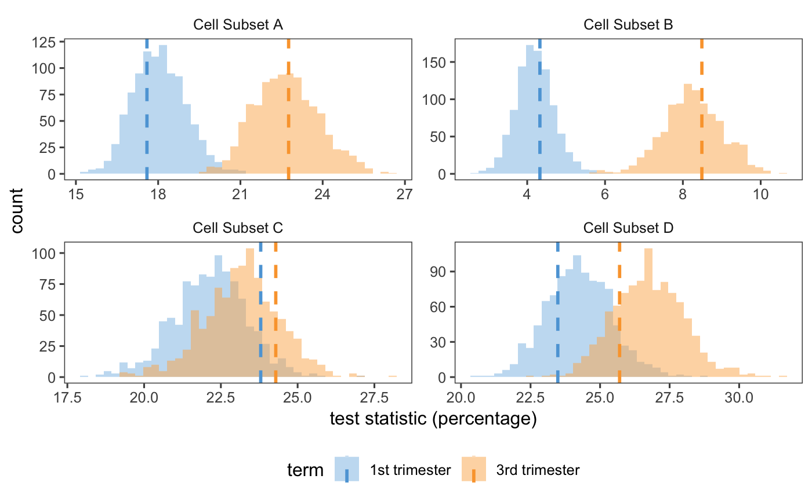
## R version 3.5.1 (2018-07-02)
## Platform: x86_64-apple-darwin15.6.0 (64-bit)
## Running under: macOS 10.14.4
##
## Matrix products: default
## BLAS: /Library/Frameworks/R.framework/Versions/3.5/Resources/lib/libRblas.0.dylib
## LAPACK: /Library/Frameworks/R.framework/Versions/3.5/Resources/lib/libRlapack.dylib
##
## locale:
## [1] en_US.UTF-8/en_US.UTF-8/en_US.UTF-8/C/en_US.UTF-8/en_US.UTF-8
##
## attached base packages:
## [1] parallel stats4 stats graphics grDevices utils datasets
## [8] methods base
##
## other attached packages:
## [1] sna_2.4 network_1.13.0.1
## [3] statnet.common_4.2.0 bindrcpp_0.2.2
## [5] MASS_7.3-51 ggcorrplot_0.1.2
## [7] ggnetwork_0.5.1 igraph_1.2.2
## [9] intergraph_2.0-2 broom_0.5.0
## [11] RColorBrewer_1.1-2 cowplot_0.9.3
## [13] ggthemes_4.0.1 SummarizedExperiment_1.10.1
## [15] DelayedArray_0.6.6 BiocParallel_1.14.2
## [17] matrixStats_0.54.0 Biobase_2.40.0
## [19] GenomicRanges_1.32.7 GenomeInfoDb_1.16.0
## [21] IRanges_2.14.12 S4Vectors_0.18.3
## [23] BiocGenerics_0.26.0 magrittr_1.5
## [25] forcats_0.3.0 stringr_1.3.1
## [27] dplyr_0.7.7 purrr_0.2.5
## [29] readr_1.1.1 tidyr_0.8.2
## [31] tibble_1.4.2 ggplot2_3.1.0
## [33] tidyverse_1.2.1 cytoeffect_0.2.0
## [35] Rcpp_0.12.19 BiocStyle_2.8.2
##
## loaded via a namespace (and not attached):
## [1] colorspace_1.3-2 rprojroot_1.3-2 XVector_0.20.0
## [4] base64enc_0.1-3 fs_1.2.6 rstudioapi_0.8
## [7] roxygen2_6.1.1 rstan_2.18.1 ggrepel_0.8.0
## [10] fansi_0.4.0 lubridate_1.7.4 xml2_1.2.0
## [13] knitr_1.20 jsonlite_1.5 compiler_3.5.1
## [16] httr_1.3.1 backports_1.1.2 assertthat_0.2.0
## [19] Matrix_1.2-14 lazyeval_0.2.1 cli_1.0.1
## [22] htmltools_0.3.6 prettyunits_1.0.2 tools_3.5.1
## [25] coda_0.19-2 gtable_0.2.0 glue_1.3.0
## [28] GenomeInfoDbData_1.1.0 reshape2_1.4.3 batchtools_0.9.11
## [31] rappdirs_0.3.1 cellranger_1.1.0 pkgdown_1.3.0
## [34] nlme_3.1-137 xfun_0.4 ps_1.2.0
## [37] rvest_0.3.2 zlibbioc_1.26.0 scales_1.0.0
## [40] hms_0.4.2 inline_0.3.15 yaml_2.2.0
## [43] memoise_1.1.0 gridExtra_2.3 loo_2.0.0
## [46] StanHeaders_2.18.0 stringi_1.2.4 desc_1.2.0
## [49] checkmate_1.8.5 pkgbuild_1.0.2 rlang_0.3.0.1
## [52] pkgconfig_2.0.2 commonmark_1.7 bitops_1.0-6
## [55] evaluate_0.12 lattice_0.20-35 bindr_0.1.1
## [58] labeling_0.3 processx_3.2.0 tidyselect_0.2.5
## [61] plyr_1.8.4 bookdown_0.7 R6_2.3.0
## [64] base64url_1.4 pillar_1.3.0 haven_1.1.2
## [67] withr_2.1.2 RCurl_1.95-4.11 modelr_0.1.2
## [70] crayon_1.3.4 utf8_1.1.4 rmarkdown_1.10
## [73] progress_1.2.0 grid_3.5.1 readxl_1.1.0
## [76] data.table_1.11.8 callr_3.0.0 digest_0.6.18
## [79] brew_1.0-6 munsell_0.5.0Aghaeepour, Nima, Edward A. Ganio, David Mcilwain, Amy S. Tsai, Martha Tingle, Van GassenSofie, Dyani K. Gaudilliere, et al. 2017. “An Immune Clock of Human Pregnancy.” Science Immunology 2 (15): eaan2946. https://doi.org/10.1126/sciimmunol.aan2946.